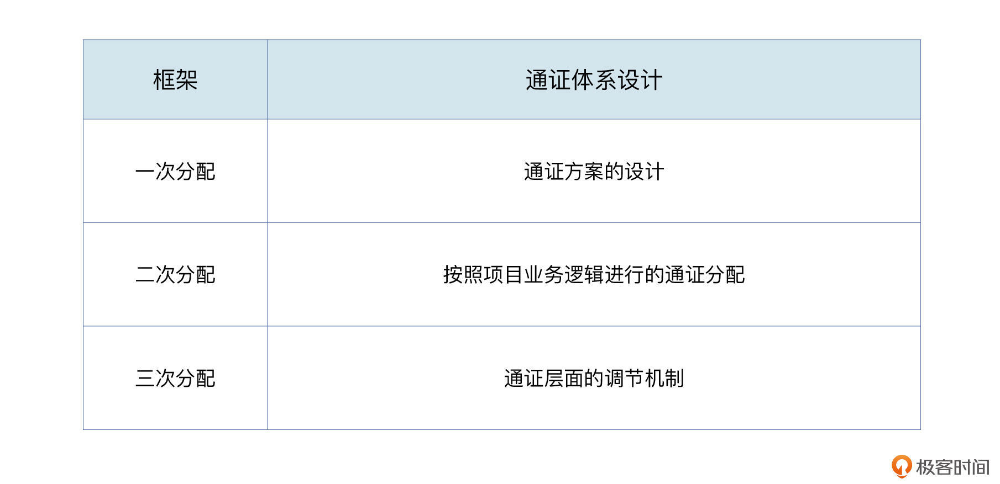

- 00 开篇词 Web 3.0：一场已经开启的互联网革命！.md.html
- 01 我们为什么需要Web 3.0？.md.html
- 02 公链：从计算分层开始.md.html
- 03 继续分层：身份和激励.md.html
- 04 NFT（一）：数据确权及其文化和商业价值的发现.md.html
- 05 NFT（二）：数据确权及其文化和商业价值的发现.md.html
- 06 边玩边赚能给游戏和电商带来新的商业模式吗？.md.html
- 07 Web 3.0社交和创作者经济.md.html
- 08 区块链：从底层重构金融.md.html
- 09 DeFi：“三无模式”开辟金融新蓝海.md.html
- 10 关于DAO的七个真相和两个趋势（一）.md.html
- 11 关于DAO的七个真相和两个趋势（二）.md.html
- 12 DeFi的空中楼阁能盖多高？.md.html
- 13 代码和法律，哪个更强？.md.html
- 14 Web 3.0正在形成的合力.md.html
- 特别放送 Yuga Labs：Web 3.0迪士尼的谛造之路.md.html
- 结束语 Web 3.0时代，你的创造和收获！.md.html
- 捐赠
03 继续分层：身份和激励
你好，我是郭大治。
上节课里，我们主要针对Web 3.0最基础的一层，也就是计算层进行了讲解，这一节我们继续按照分层的思路往上走，来了解下Web 3.0的身份层和激励层。至于夹在中间的应用层，我们还会在接下来的课程中去详细讲解。
好，那么，什么是身份呢？在现实世界里，身份指的是你的出身和社会地位，也就是你用来和其他人交流或者互动的具体的载体。而在Web 3.0当中，身份指的是你作为一名用户参与各种活动的具体载体，也就是账户了。
而激励，不论是在现实世界还是Web 3.0，都指的是通过制度设计对组织或个人行为的引导。站在Web 3.0生态的角度，各种去中心化应用从功能上来看千差万别，但是每一个应用，都离不开账户和经济激励机制发挥作用。
接下来，我们就来看看身份和激励在Web 3.0世界里，具体是如何发挥作用的。
DID：通用的独立身份！
首先是身份。用户在去中心化网络中，需要一个全新的、“独立”的身份，所谓“独立”的身份，就是一个不依赖任何第三方机构的证明，就可以把自己“辨识”出来的身份。
这个身份既不同于现实世界的“身份证”，因为身份证是政府机构给你开的介绍信，它只在一国范围内有效。这个身份也不同于在各个互联网平台或者社交媒体注册的账号，比如日常生活中的“大V”或者推特账号，虽然一个受粉丝欢迎的“大V”在社交媒体上具有很大的影响力，有的人还可以赚很多钱，但这种“身份”和“身份证”一样，同样依赖于互联网平台的“认可”才能持续存在，一旦被平台所“限制”，不管多大影响力的身份，可能都会“消失”。
另外你应该也有类似的经历，就是在不同的平台上登录，都需要先进行注册和认证，每一个平台都有一套不同的要求，这对于我们用户来说不仅操作起来繁琐，而且还面临着信息泄露的风险。
所以，Web 3.0的用户需要一个通用的且独立于使用平台的个人身份，这个身份就是去中心化身份标识，即 DIDs（Decentralized Identifiers）。
那究竟什么是DIDs呢？根据网际网络联盟（World Wide Web Consortium，简称W3C）定义，DIDs是用于可验证的去中心化数字身份的一种新型标识符，这种标识旨在使DID的发行方不仅能够证明对个人身份的控制，而且可以独立于任何机构，包括注册表或证书认证来对外提供验证信息。
在2022年7月19日，W3C分布式标识工作组编制的《Decentralized Identifiers (DIDs) v1.0》规范，正式成为了W3C推荐标准，这就让DIDs在国际技术标准方面，获得了与HTTP和CSS同等基础性的地位，同时这也预示着DIDs将可以为推动Web 3.0的发展，发挥更加直接的作用。
DID的应用，从身份的集成到运用
好，了解了DIDs诞生的背景信息之后，下面我们就来具体看看DIDs的具体结构和功能应用。这部分内容直接关系到DIDs的发行和使用，如果你也希望能拥有自己的DID，行走在Web 3.0的世界里的话，一定要重点关注接下来的内容。
首先，从结构的角度来看，DIDs主要是由基础层和应用层组成的。
其中，基础层包括DID标识符和DID文档，DID标识符是一套对DIDs进行辨识的标准表达形式，包括标识方法和标识内容两部分。截至2022年上半年，已经有大约100种标识方法完成了注册，微软、IBM以及腾讯等机构，都对相关标识方法进行了注册，以太坊等公链也是标识方法的一种。而DID文档，就是针对特定的DIDs编写的说明文档。
DIDs的基础层主要是构造了DIDs本身，不过，它对于个人的具体信息并没有说明，所以我们还需要通过应用层，来给DIDs填充具体的内容。
DIDs的应用层主要由DID解析器（DID Resolver）和可验证申明（Verifiable Credential，简称VC）组成。
其中，DID解析器主要负责通过DID标识符获取DID文档，而VC就是发行机构在关于证明个人身份，或者经历的文件上进行加密。当我们需要使用这些证明文件的时候，可以通过专业的验证机构，比如公链、专门的App等，对发行机构的加密信息进行验证，并对个人的身份提供说明。
实际上，从技术原理上来说，VC就是非对称加密技术在文件管理系统中的应用。非对称加密算法涉及到了信息安全方面的知识和密码学原理，这部分内容咱们课程里不会做过多的解释，如果你有需要，可以参考这个链接进一步了解。
所以，从以上内容可知，DIDs是一个借助于技术手段，链接现实世界和虚拟世界的综合性系统，同时还需要借助于不同参与主体的分工协作，来实现系统的目标。
DID的生态架构
关于这个系统，我们可以根据国际知名的加密基金Amber Group针对DIDs生态架构的总结，他们把DIDs生态系统分成了四个层面，包括：标准层、基础设施层、集成层、应用层。
其中，标准层处于DIDs生态最基础的位置。在标准层，W3C和DIF（Decentralized Identity Foundation，去中心化身份基金会）等国际性组织，作为全球范围技术标准的制定者和推动者，主要就是负责DIDs相关标准的制定，并去推动DIDs和其他相关标准进行对接和融合，同时也为各种技术的研发提供基本框架。
从标准层开始往上，第二层是基础设施层，这里包括了为DIDs识别和验证提供服务的各类机构和项目，比如以太坊、Hyperledger等区块链，专注于DIDs集成的Onotology，以及基于区块链提供域名服务的ENS等。VC的发行、验证以及数据存储等功能，主要也是通过基础设施层实现的。
这里，我们重点讲一下ENS。ENS是以太坊生态的域名服务系统，它的作用可以对标Web 2.0的DNS。
ENS可以把账户地址和 .eth的域名进行绑定，用户可以基于ENS地址，直接查看账户余额或者进行转账。而且，ENS域名还可以和各种钱包、去中心化应用进行集成，比如ENS可以和去中心化存储IPFS进行集成，我们也可以通过ENS将文件存储到IPFS系统中，从而构建分层的去中心化网络。
那么，相对于DNS域名来说，ENS的最大特点就是用户自己拥有域名，而ENS并无权将任何域名进行撤销。
另外，ENS虽然只提供域名服务，但是它的盈利能力却非常可观。ENS是根据不同等级的域名按年收取会员费的，上线一年多的时间，已经实现了超过5000万的收入，而ENS的团队也就十几个人。
所以你看，Web 3.0还是充满了很多“自下而上”的创业机会的。
第三层是集成层，这一层主要是通过各种技术手段，实现链下身份认证、链上身份聚合，以及链上行为证明等功能，然后把链下和链上数据集成DIDs标识符和标识文件。
比如，BrightID 通过个人照片和视频等方式，进行链下身份验证，就实现了“一人一账户”帮助各种去中心化应用防止“女巫攻击”的目的。
不过需要说明的是，链下身份认证并不是将现实世界的真人和链上账户进行“强绑定”，而只是基于个人生物信息统一“链上账户”，避免一个人开设多个账户发起“女巫攻击”。但是我们也要知道，基于链上账户，也并不能对应到现实世界的具体个人。
就比如，Spruce（DIDs身份赛道重量级项目）帮助用户直接使用以太坊账户，就可以在Web 2.0应用进行注册和登录，我们通过Web 2.0应用和Web 3.0应用共享账户，就可以让Web 2.0社交媒体的流量和Web 3.0流量进行融合。这样一来，像是那些Twitter上的大V，就有望在DeFi平台获得更低的贷款利息。另外Spruce还设置了专用的SpruceID，这个ID不仅可以实现签署、验证和共享消息等功能，还可以应用在跨产品跨链的场景。
第四层就是应用层，主要是指基于DIDs实现的各种应用，比如信用评分和贷款、社交、门控、DAO和捐赠等。
所以说，DIDs构成了衔接现实世界和虚拟世界的一个桥梁，它将会成为群体用户从现实世界向虚拟世界迁移的一个主要入口。
我们可以来看几个案例。
比如，基于Guild，可以在Discord和Telegram中设置社群准入条件，比如要持有某种NFT才可以加入某个Discord频道等。
再比如，ARCx可以基于链上数据进行信用评级，比如账户长期在Compound、Aave或者MakerDAO借款，但从未被清算，将被视为“信用良好”，而获得良好评价的账户，就可以用更优惠的“抵押率”获得贷款。
现在，DIDs的发展已经获得了社会各界的广泛关注，在众多大型科技公司中，微软对于DIDs的重视程度尤为突出。早在2018年，微软就宣布DIDs将作为公司区块链业务的切入点。在2019年5月13日，微软发布了Identity Overlay Network，也就是ION测试版，任何人都可以通过ION创建自己的DID。
另外，为了加强技术协调，微软还加入了DIF，并和同属DIP成员的Consensys、Transmute等机构，开发了支持规模化创建DIDs的协议sidetree，ION就是基于sidetree完成的。
那么，微软为什么对于DIDs如此热情呢？其实，在其发布的《去中心化身份》一书中，微软就坦言他们开发DIDs的首要目标，就是将其应用在微软云计算平台上，让它成为所有云计算用户的统一身份标识。这样一来，微软就能基于DIDs，来为用户提供数据授权的功能了。
通证系统：更精细的激励工具
好，身份之后，我们再来看激励。
首先，我们要知道的是，通证是去中心化网络中，发挥激励作用的主要工具。那么什么是通证呢？通证就是以数字形式存在的权益凭证。
我们从形态上看，通证和密码其实有类似的地方，它们都意味着在特定场景中的一种权益，但密码是在中心化的场景下使用的，而通证存在于去中心化的场景之中，而且它还可以和智能合约相互结合，形成复杂化的功能。
而从属性上来看，通证是一种权益凭证，可以代表一切可以数字化的权益，比如股权就可以以通证的形式存在，但也不是所有的通证都代表股权，通证还可以表示为债权、投票权、使用权等等类型。
我举个简单的例子。在上节公链课程中，我们介绍过一类项目，叫去中心化存储，比如Filecoin。这类项目的主要目标，是建立一个用户共享的存储市场，那么，Filecoin中的通证FIL，就代表了对于一定数量的存储空间的使用权，我们任何人凭借持有的FIL，可以使用其他人的存储空间保存自己的文件。
在Filecoin的案例里，代币FIL只代表使用权，而和股权、分红权、债券都没有任何关系。所以说，通证作为一种权益凭证，代表的权益性质是高度依赖于场景的。
通证的本质
其实，我们要理解通证的本质，还需要从两个属性入手。
- 通证的技术属性。
首先，通证都是基于特定的区块链账本和智能合约形成的，而密码学规律，是通证可以作为权益凭证的技术基础。
其次，可编程性是通证的突出特征，可编程性使得通证可以通过和智能合约的结合，针对各种数字场景进行模拟，并可以代表各种复杂的权益。
基于通证的技术属性，通证就具有了将数字化权益进行确权、定价和可交易的基本功能。
- 通证的经济属性。
因为通证本质上是一种权益凭证，通证的数量代表了权益的数量，而对于权益的需求则表现为通证的需求，这就是通证的供给和需求，通证供给和需求的平衡，就形成了通证的价格。
其实，通证的权益和通证价格之间的关系，就像是传统经济学中关于商品的价值和价格的关系一样，商品的价值是商品价格的基础，但商品的价格，又直接取决于商品供需的平衡。
所以，基于通证的技术属性和经济属性，通证在作为数字化权益凭证的时候，自身也会演变为一种数字资产，这一点也是区块链在一系列数字技术中的重要特征。区块链可以让数据产生一种稀缺性，从而可以让数据成为一种资产。
而在现实社会中，通证作为一种资产，已经被各国政府和法律广泛接受了。因为，通证的资产属性来源于它的自然属性，这一点是不以任何人或者任何机构的意志为转移的。
但是，除了萨尔瓦多（全球首个将比特币和加密货币作为法定货币的国家）之类的一些小型经济体之外，通证还不能算是货币，尽管比特币是以建立一个“点对点的电子现金支付系统”的目的启动的，但货币仍然属于社会治理层面的内容，在没有获得各国货币当局的认可之前，通证不太可能成为货币。
当然，任何硬币都有两面性，通证在作为数字权益凭证方面，还是具有很大的优势的，而且它还可以独立于其背后的权益，作为资产存在。但通证同样在技术和经济领域，面临很大的风险。
- 在技术层面，代码风险、合约风险，对于通证的安全会产生重大影响；
- 在经济层面，通证可以独立于它所代表的权益而存在，而这就导致人们无法通过通证本身，去判断这种权益的存在，也就使得市场上存在各种“空气币”。如果你对资产背景不太了解，可能就会造成很大的迷惑。
此外，通证市场价格的暴涨暴跌，对于通证的使用无疑也是一种“负面冲击”，比特币不为各国货币当局接受就是例证。
通证经济
而有了通证，就会有通证经济。
通证经济的主要特点，就是基于通证进行创作和消费的协调。虽然通证在本质上不是货币，但通证在通证经济中其实是发挥着类似货币的作用，特别是发挥流通手段和储藏手段的作用。
我们一般认为，通证体系的设计是通证经济中非常重要的一项工作，但就像不同时期、不同流派的经济学家，关于货币政策对宏观经济的长期发展，是否产生影响存在较大分歧一样，关于通证设计在通证经济的作用，也存在不同的观点。
有人认为，通证体系的设计对于Web 3.0项目来说至关重要，因为代币体系的设计，会直接对项目社区各类人群的行为模式产生影响；但也有人认为，通证体系对于Web 3.0项目的发展只具有辅助作用，而不会形成决定性的影响，就像“货币中性主义”认为的那样，长期来看，货币超发并不会对“社会有效需求”形成刺激。
关于通证体系的价值，我们可以通过通证体系设计的具体内容来做进一步的分析。实际上，通证体系设计的主要内容，就是针对通证的供给和需求进行管理，并集中体现在通证的“三次分配”中。

其中，第一次分配指的是通证方案的设计。通证方案设计需要对通证总量、单币制或多币制、分配比例、释放节奏等指标进行具体说明。这里的通证总量，反映的是预期的经济规模总量，但由于通证一般具有18位的代币精度，通证总量的具体数据并没有太多的实际意义。
所以，对于通证总量来说，比较重要的是总量上限是否固定，但是否将通证总量设定为上限固定，主要还是取决于项目的功能定位。比如，比特币模拟黄金属性，所以给它设置了2100万枚总量上限。
但对于大部分公链来说，由于我们需要持续不断地对矿工进行激励，所以往往会设计一个通胀率，通过每年增发进行矿工激励，比如ETH转为Pos共识机制之后，每年通胀率约为5%；而对于非公链类项目来说，则往往设定为总量固定。
我们从第一次分配的主要内容来看，可以发现它主要涉及的是通证供给的管理。
第二次分配指的是按照项目业务逻辑进行的通证分配。因为对于通证背后权益的需求，是决定通证需求的最核心因素，如果项目本身没有对外价值的输出，那么对于权益的需求也就无从谈起，对于通证的需求也就没办法成立了。
所以，业务逻辑代表了对于通证最基本的需求。如果通证设计仅仅局限于通证层面进行设计，而无法在建立通证需求方面发挥作用的话，我们就可以确定，通证体系的设计对于通证经济的作用其实是辅助性的。
至于第三次分配，指的是通证层面的调节机制。比如，针对通证设计的各种质押挖矿机制、销毁机制以及分红机制等制度。
要知道，通证层面的调节机制和业务逻辑并不直接相关，所以对于大多数项目来说，通证层面的设计大同小异。它主要的形式，一般都是以牺牲社区成员在短期内的流动性为前提，来获得更多的社区通证的奖励。所以，这个对于通证需求的刺激效果比较有限。
事实上，关于通证体系的设计是一个比较复杂的话题，这个内容也会是我们贯穿各个赛道分析的一个重要的视角，我们在后续的课程内容中，还会结合各个赛道的场景特点持续进行分析。
小结
这节课，我是在公链之上，给你进一步介绍了Web 3.0生态另外两个通用的分层，身份和激励。在身份层，我们知道了，DIDs的构建为大量的创业提供了机会；在激励层，通证体系的作用又反过来依赖于产品和功能。
那么从下一节开始，我们就会进入应用层，沿着NFT、商业、金融、治理等细分领域，继续探寻Web 3.0带给我们的惊喜，我们不见不散。
思考题
如果说，比特币的主要价值来源于它的稀缺性，因为稀缺而成为“数字黄金”。那么以太坊作为“世界通用账本”，总量不固定，且不断增发的ETH的价值来源是什么呢？
欢迎在留言区分享你的答案，也欢迎你把今天的内容分享给更多的朋友。
© 2019 - 2023 Liangliang Lee. Powered by gin and hexo-theme-book.